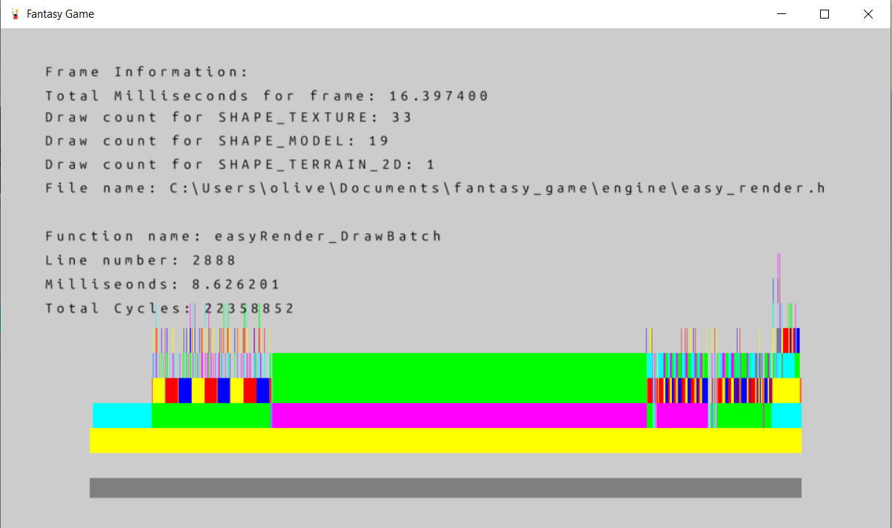
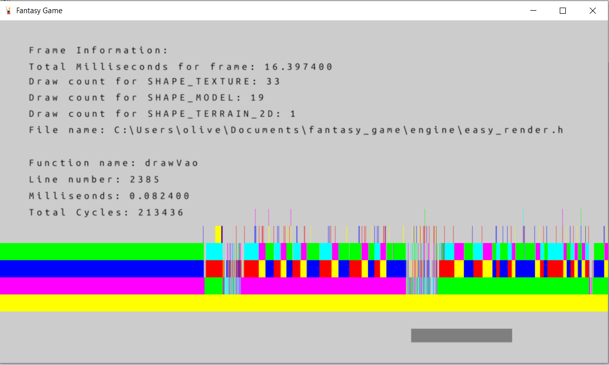

Easy Engine: full 3D game engine written in C/C++
#Easy Engine is a project to create a full 3D engine written in C/C++ using very minimal libraries. The project is designed to learn as much as possible how a modern game engine is made and learn all the skills that go into creating one.
Renderer
#The engine has a 3d renderer using OpenGL that has support for 2d sprites, fonts, 3D models, 3D seletal animation, directional & point lights, MSAA anti-aliasing, Bloom, tone mapping and terrain rendering. It does this while minimising draw calls by batching all common draw calls together. It has an easy to use API.
#
#Example game using the engine
#Video of another example game using the engine
Profiler
#A profiler to examine what's slowing the frame rate and load time down. Custom built with no libraries, you hit F4 and can see information about what happened in a frame.
#You can drill down into a function if it is slow and see why. It also shows all seperate draw submissions to the GPU each frame, to see what your're drawing.
#
#
#
#
Virtual Machine and AST construction
#THe engine has a stack based virtual machine aswell as construction of an abstract syntax tree from a text string. In these videos you can see a block based code builder I made in the engine that made use of the virtual machine (the window to the far right).
#Demostration of block code builder
#Using the block editor to manipulate shapes
#Demostration of 'If' statment
#Demostration of 'While' statment
Math Library
#Custom math library that has functions for lerp functions, smoothStep functions, Vector2, Vector3, Vector4 operations (cross and dot products) and 4x4 matrices, euler angles and Quaternions for 3d rotation and rendering. Ray casting against 3D boxes not axis aligned.
Physics Engine
#Custom Physics engine that supports 2d collions
Fonts
#The engine uses SDF fonts (popularized by Valve) and has the ability to create SDF Font Atlases from .ttf fonts. You can render fonts both in screen space and world space, and handles custom UTF8 decoding.
#Video demonstration of SDF font